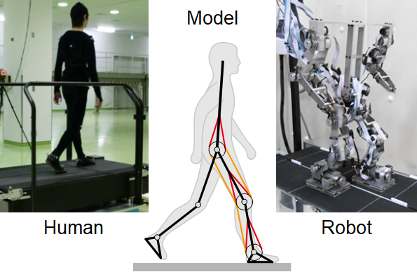

Research Topic
Our study aims to elucidate the mechanisms of intelligent adaptive behaviors, especially locomotion, in humans and animals through the analysis of measured data and computer simulation of neuro-musculo-skeletal systems based on the dynamical systems theory and computational neuroscience. Furthermore, we develop the control scheme of legged robots based on the findings to achieve adaptive locomotor functions.
News
Dec. 21, 2022
Prof. Aoi gave a talk at School of Biological Sciences, Georgia Institute of Technology, USA. Here.
Sep. 8, 2022
Our website was opened.
Jun. 22, 2022
Okamoto (D2, Kyoto University) published a modeling study of humans from Frontiers in Neural Circuits
in collaboration with Prof. Kokubu (Kyoto U) and Prof. Obayashi (Okayama U). Here.
Jun. 3, 2022
Adachi published a modeling study of quadrupeds from Frontiers in Bioengineering and Biotechnology in
collaboration with Prof. Matsuno (Kyoto U) and Prof. Kamimura (Nagoya Inst Tech). Here.
May 10, 2022
We published a study of many-legged robot from IEEE Transactions on Robotics. Here.
Apr. 14, 2022
We published a modeling study of cheetahs from Frontiers in Bioengineering and Biotechnology in
collaboration with Prof. Kamimura (Nagoya Inst Tech), Prof. Wada and Prof. Higurashi (Yamaguchi U), and Prof.
Matsuno (Kyoto U). Here.
Apr. 8, 2022
Kim (M2, Kyoto University) published a neuro-musculo-skeletal modeling study of cats from Frontiers in
Bioengineering and Biotechnology in collaboration with the research group of Prof. Rybak (Drexel U),
Prof. Yanagihara (U Tokyo), and Prof. Fujiki (Dokkyo Med U). Here.
Apr. 1, 2022
Our laboratory was launched.